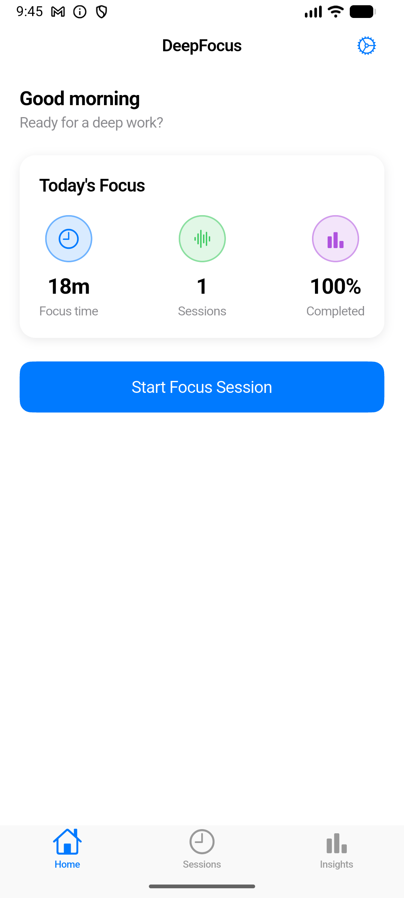
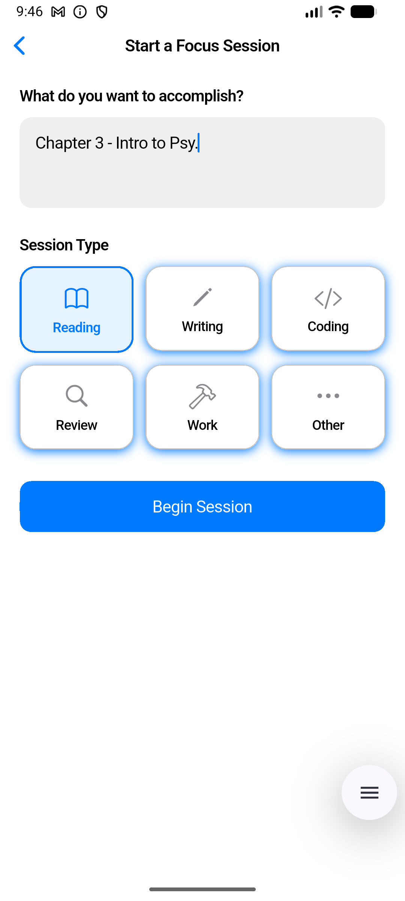
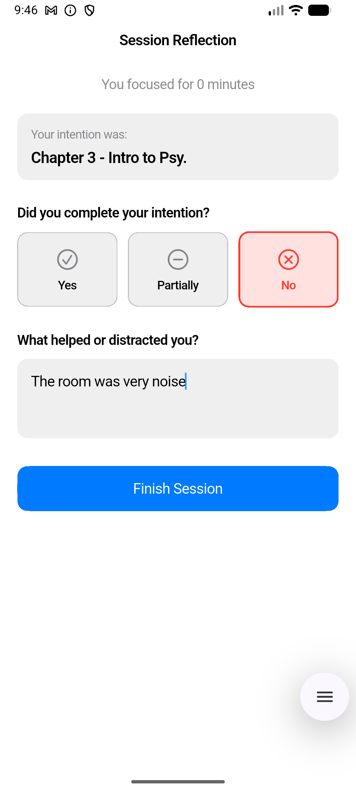
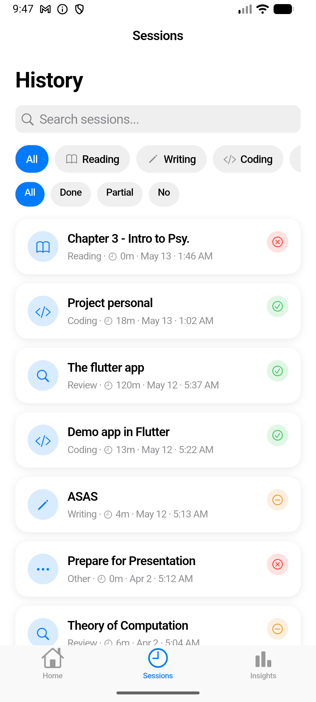
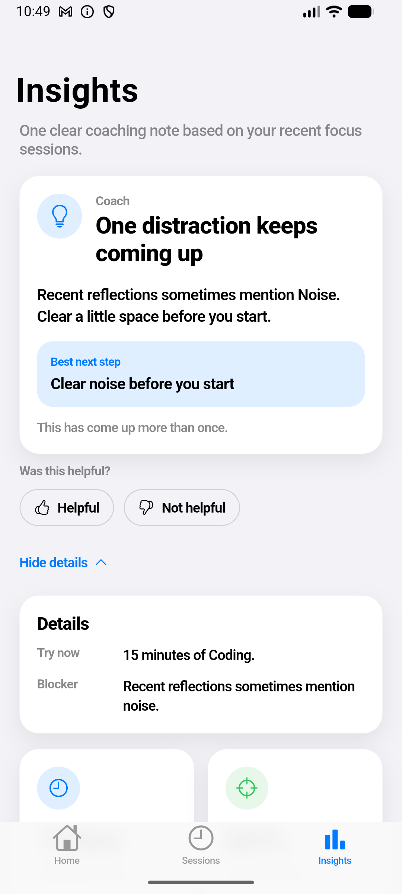

A clean and adaptive focus app that helps users plan deep work sessions, reflect after working, and receive simple personalized recommendations without overwhelming dashboards or complex analytics.
DeepFocus is designed to help users focus with clarity instead of noise. The app gives one practical recommendation at a time and gradually adapts to the user's real habits through local personalization.
The app adapts over time using completed sessions, reflection notes, time patterns, category success rates, and coach feedback.
Create focus sessions with a category, intention, and duration, then track how the session actually went.
After each session, users can reflect on what helped or blocked their focus, helping the system improve over time.
Replace the placeholder image paths below with your own screenshots. Simply place your JPG or PNG files in the same folder as this HTML file.

Quick access to focus sessions with lightweight statistics and personalized recommendations.

Organize focus sessions by category and start work sessions with a clear intention.

Reflect on whether the session was completed successfully and what factors affected concentration.

Browse previous focus sessions and review past productivity patterns over time.

Receive clear and human-friendly insights instead of overwhelming productivity dashboards.
DeepFocus is intentionally designed to stay simple and actionable.
Choose a category, define your intention, and begin a focused work session.
Mark whether the session was successful and describe what helped or interrupted your focus.
The app gradually personalizes recommendations using local learning and real usage behavior.
DeepFocus combines simple UX design with adaptive local personalization.
Cross-platform mobile development with a clean and responsive user experience.
Sessions, reflections, feedback, and personalization data are stored locally on the device.
Includes a shadow-mode machine learning pipeline for future model validation and personalization improvements.